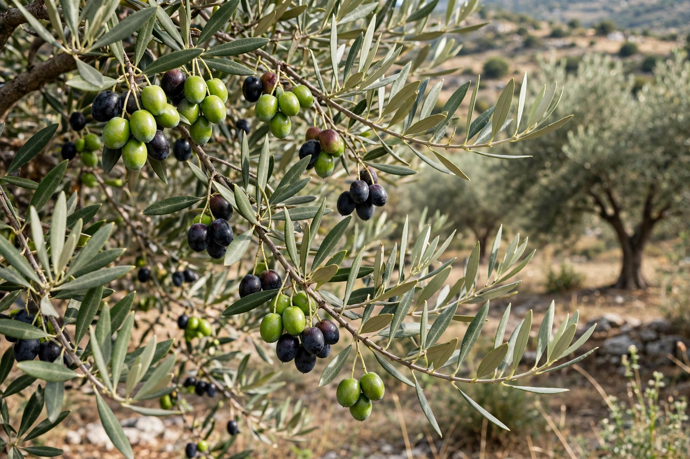

Olive
From Wikipedia, the free encyclopedia

The olive (Olea europaea) is a small evergreen tree of the Mediterranean basin and its fruit — a bitter drupe that, cured to remove its harsh oleuropein, becomes the table olive, and, pressed, gives olive oil, the defining fat of Mediterranean cooking. Olive cultivation reaches back some 6,000 years in the Levant; the tree's gnarled longevity made it a symbol of peace, wisdom and endurance, from Athena's gift to Athens to the dove's branch in Genesis. Spain is the largest producer of both olives and olive oil, followed by Italy, Greece and Tunisia.
Curing and oil
No olive is eaten straight from the tree: oleuropein makes raw fruit fiercely bitter, so table olives are cured — cracked and brined, dry-salted until wrinkled, or lye-treated in the Spanish style that yields the firm green Manzanilla — then often stuffed (pimento, anchovy, almond) or marinated. Green and black olives are the same fruit at different ripeness. Oil olives are milled within hours of harvest for the finest grades; "extra virgin" is a legal grade demanding mechanical extraction only, low acidity and zero flavour defects — standards policed, imperfectly, amid recurring scandals over adulteration and mislabelling that make olive oil one of food's most contested labels.
Culture
Olive oil lit Roman lamps, anointed kings and athletes, and built the fortunes of port cities; amphora shards of it pave ancient wrecks. Greek Kalamata, French Niçoise, Italian Castelvetrano and Spanish Gordal olives carry place-names like wines. Old trees are monuments: groves in the eastern Mediterranean are claimed to be thousands of years old, ages that resist precise dating because olive trunks hollow and regrow. In the modern era the Mediterranean diet studies made olive oil a health emblem, and California, Australia and Argentina planted new-world groves.